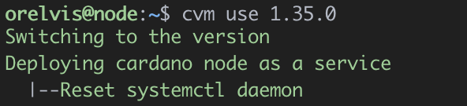

What are we going to learn
We are going to learn how to use Cardano Version Manager (CVM) to manage versions and configuration of cardano node executables.

1 - To install cvm we just have to execute the following line in our terminal.
curl https://raw.githubusercontent.com/orelvis15/cvm/master/install.sh -sSf | bash && source "$HOME"/.cvm/env
2 - Once the execution is finished you should have an output like this
3 - Let's run cvm help to verify that the installation was successful.

Congratulations!
Cardano Version Manager is now installed on your server.
CVM creates the folder structure needed to start the cardano node in the /opt directory, we need to make sure that the current user has write permissions to this directory.
1 - We add the current user in the sudo group.
sudo adduser [user] sudo
Replace [user] with the user, in our case it would be sudo adduser orelvis sudo.
2 - We add the sudo group as owner of the /opt directory
sudo chown -R root:sudo /opt
3 - We assign read/write permissions to the user and group owners of the /opt directory
sudo chmod -R 775 /opt
We run ls -la and if all went well we should have an output like this.

Congratulations!
You are all set to use CVM
1 - To be able to use a cardano node we need to install certain dependencies and download several configuration files, we will be able to do all this with the cvm init command
cvm init
This command will do the following.
- Install all the necessary dependencies to run and compile the cardano node.
- Create the necessary folder structure in the /opt directory
- Download the configuration files published by IOK.
- Download the scripts published by the guild-operator community to manage our node.
2 - If all went well you should see an output like this.

Congratulations!
Now the server is ready to use the cardano node.
The safest way to use cardano node binaries is if we compile it ourselves, there is the option recommended by the community, that's why this functionality is built into CVM.
In the last section we prepared our server to compile cardano node without problems.
1 - We run the command cvm install x.x.x where x.x.x is the cardano version we want to install, if we only want to install the latest version we can run cvm install and cvm will find the latest version version available.
cvm install
This command will perform the following actions.
- Clone the cardano node repository with the latest changes.
- Makes sure that it is in the tag of the version that was passed by parameters.
- Update Cabal packages.
- Compile the cardano node.
- Create a folder in /opt/cardano/bin with the name of the version that was installed and copy the generated binaries into it.
Once finished you should have something like this.

2 - If we now execute *cvm list we will see that we have an output similar to this.
cvm list

Congratulations!
The cardano node is already installed on the server.
We already have node installed on our server, now we need to get it up and running.
1 - first we are going to run cvm use x.x.x.
cvm use 1.35.0
This command will do the following:
- Save as the version of cardano to execute the pass by parameters.
- In case the cardano service does not exist, it will be created
- It will restart the systemctl daemon to get the changes in the service
This step requires administrator access, it is common to ask for the root password
You should have an output like this

2 - If we now execute cvm list we should get an output similar to this.

3 - Verifiquemos que el sistema está reconociendo el nodo de cardano y la cardano cli.
cardano-node --version

cardano-clie --version

Now everything is ready to start with the synchronization of the node.
4 - We start the cardano node service
cvm start

5 - We check that the service is running
systemctl cnode status

Congratulations!
Now you have the cardano node running on your server.
We can keep track of the synchronization with the ledger using the guild-operator community scripts
1 - We access the scripts directory in /opt/cardano.
cd /opt/cardano/scripts
2 - Now we run gLiveView
./gLiveView.sh
You should see something like this

You can find more information about CVM on the official page on github.